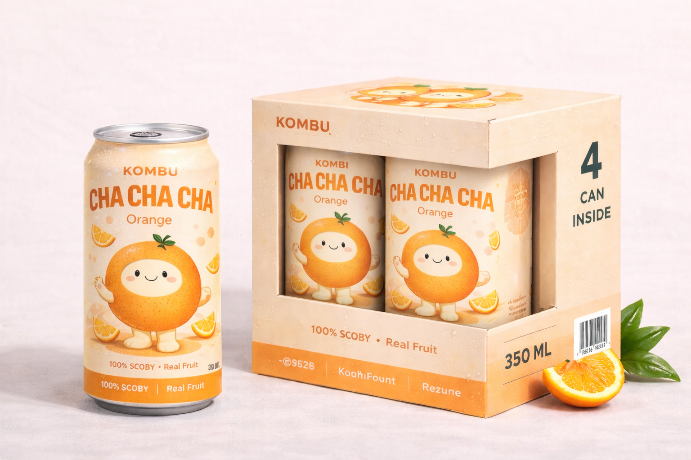
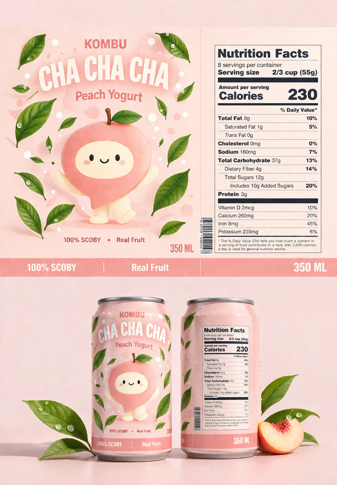

Character direction
Create expressive fruit mascots with recognizable personalities.
An expressive kombucha packaging concept that makes natural refreshment feel colourful, lively, and fun.

Kombu Cha Cha Cha / Selected work, 2026
Kombu Cha Cha Cha is a packaging and identity concept that uses fruit characters and expressive type to bring energy to the kombucha category.
Many kombucha brands rely on restrained, health-focused minimalism. The challenge was to keep the product feeling natural while making the packaging more joyful and distinctive.
Create expressive fruit mascots with recognizable personalities.
Use bold curved typography and soft colour families.
Extend the system across cans, labels, and multipacks.



The concept demonstrates how typography, characters, and colour can form a flexible packaging family without losing its playful personality. No market performance is claimed.